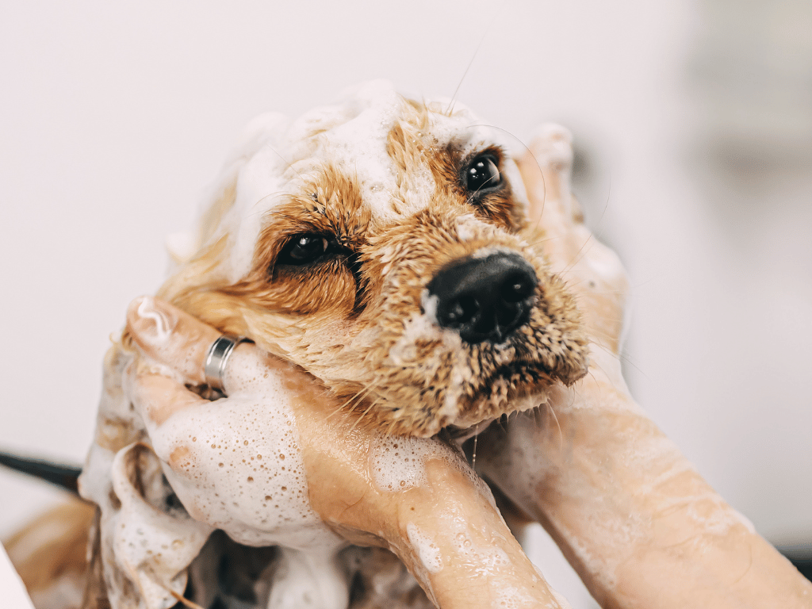

Top 5 Must-Have Products for Pet Owners with Allergies
By John Doe

Top 5 Must-Have Products for Pet Owners with Allergies

Loving your furry friend shouldn't come with the price of constant sneezing, itchy eyes, and a stuffy nose. With the right products, you can reduce allergens in your home and reclaim your comfort. Here are our top 5 essentials every allergic pet owner should have.
Loving your furry friend shouldn't come with the price of constant sneezing, itchy eyes, and a stuffy nose. For the millions of pet owners who also suffer from allergies, finding balance can be a real challenge. With the right products, you can significantly reduce allergens in your home and reclaim your comfort. Here are our top 5 essentials every allergic pet owner should have.
1. A High-Efficiency Particulate Air (HEPA) Air Purifier
Pet dander, pollen, and other allergens are constantly floating in the air. A quality HEPA air purifier works tirelessly to capture these microscopic particles before they can trigger your allergies. Look for a model with a true HEPA filter (99.97% of particles down to 0.3 microns) and make sure it's rated for the size of your room. Placing one in your bedroom or living room can make a world of difference in your daily symptoms. Brands like Levoit and Coway are praised for their quiet yet effective operation.

2. Pacagen Cat Allergen Neutralizing Spray
This is a true game-changer. Pacagen isn’t just another fabric freshener—it’s a targeted solution for cat allergies. Scientifically formulated to neutralize Fel d 1, the primary cat allergen, Pacagen’s active ingredients break it down on contact. Spray it on your couch, bedding, or your cat’s favorite blanket, and in just a few minutes allergens are reduced to harmless fragments. Safe, easy, and effective—this one’s essential for every allergic cat owner who refuses to sacrifice cuddles.

3. Allergen-Reducing Shampoo or Wipes
Weekly baths may not work for every pet, but allergen-reducing shampoos like TropiClean or Allerpet help cleanse fur of dander and saliva. Between baths, quick allergen-reducing wipes are a simple daily fix that removes dander and keeps allergen levels under control—without the stress of frequent full baths.

4. A HEPA-Sealed Vacuum Cleaner
A poor-quality vacuum can stir allergens into the air. A sealed-system vacuum with a HEPA filter traps dander, fur, and dust without releasing them back into your room. Models from Dyson, Shark, or Miele are designed for pet owners and often come with specialized attachments to clean fur from carpets and upholstery.

5. Allergen-Proof Bedding
Since we spend a third of our lives in bed, creating an allergy-safe sleep zone is crucial. Allergen-proof mattress and pillow covers act as barriers against dander. Combine this with weekly hot water washes, and you’ll drastically cut down on allergens where you rest most—helping you wake up refreshed and symptom-free.
Take Back Control
Living with pets and allergies doesn’t have to mean endless sneezing fits. With these 5 must-have products, you’ll reduce allergens, breathe easier, and enjoy the best parts of pet ownership without the constant discomfort. Small changes can create a healthier home—for you and your furry friend.